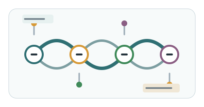

实验控制台
SEARCH
搜索任务
设置重复单元、搜索规模和 reward 来源，运行后在同一页面查看进度与候选结果。

01
搜索设置
参数会保存到项目配置文件。
02
就绪
运行进度
搜索时自动刷新。
等待运行
设置参数后点击运行搜索。
第 0 / 0 轮已评价 0 个候选
- 1MCTS 选择生成本轮完整重复单元
- 2RDKit 建链自动计算 DP 并生成结构
- 3Packmol 装箱建立多链初始体系
- 4LAMMPS 输入写出冷热区 NEMD 计算文件
- 5体系压缩高温熔融、预压缩并寻找密度平台
- 6直接 NEMD建立温度梯度并采样中央区热流
- 7Reward 回传热导率转换为奖励并回传
- 8导出最终 Top K整理结构、体系和输入文件
- 9保存结果更新候选数据库
03
本次结果
搜索产物与最低热导记录。
实时 Top K等待产生候选
| 暂无数据 |
低热导候选按当前数据库排序
FRAGMENTS
片段空间
维护自定义片段和允许的下一步连接。当前不执行家族规则检查，保存前请人工核对化学合理性。
01
添加片段
SMILES 需要包含两个连接位点。
启发式 roles
仅启发式 reward 依赖这些标签。
选择常用标签，或让程序辅助判断。
连接规则指定这个片段之后允许选择什么。
02
路径预览
箭头代表 MCTS 可选择的下一步。
查看 JSON 配置
03
API 生成片段
密钥只保留在当前页面，不写入项目文件。
等待生成...
DATABASE
结果数据库
检查搜索访问记录、reward 和热导率结果，并按需要清理历史候选。
MCTS 候选序列已选 0 个候选
清除前自动备份 CSV 到
outputs/archive/，不会删除结构和 LAMMPS 输入文件。热导率结果直接 NEMD 反馈记录
GUIDE
运行说明
所有命令均使用相对路径，可在不同设备的项目目录中运行。
推荐顺序
- 1选择片段空间使用内置家族，或先创建自定义片段。
- 2设置搜索参数目标链长默认 120 Å，小规模测试建议使用 20 到 50 次迭代。
- 3运行并观察阶段LAMMPS reward 会显著增加运行时间。
- 4人工复核候选当前版本不自动执行家族化学规则检查。
01启动前端服务
02运行主流程
03手动运行 LAMMPS